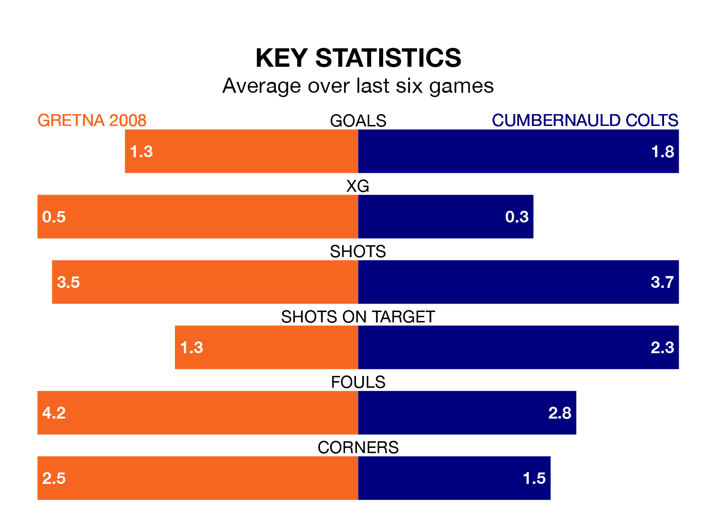

Relegation candidates Gretna 2008 face a challenge against high-flying Cumbernauld Colts at Raydale Park on Saturday.
Gretna 2008 are 17th in the Lowland Football League table, and have picked up just one win and four draws in their 27 games to date.
Colts, meanwhile, are second in the standings with 51 points, having won 15 and drawn six of their first 26 matches, and are 15 points behind table-toppers East Kilbride.
Gretna 2008 are in terrible form in the Lowland Football League, with no wins and two draws from their last six games.
With three wins and two draws over that period, Cumbernauld Colts's form is much better – they have taken 11 points from 18, compared to the hosts' two.
With 19 goals in 27 games so far this season, Gretna 2008 are the league's second-lowest scorers with 0.7 goals per game. And they are conceding more than average, letting in 92 goals at a rate of 3.4 per game.
Colts, meanwhile, are above average scorers, with 2.0 goals per game, compared to a league average of 1.7. They have conceded 1.2 goals per game.
In the last 10 years, Gretna 2008 and Cumbernauld Colts have played each other on 13 occasions. Gretna 2008 won three of them, Cumbernauld Colts six, and they drew four times.
On average, Gretna 2008 scored 1.3 goals and Colts 2.5 in those matches.
Their last meeting was on August 23, when Cumbernauld Colts won 6-0 at home.
Gretna 2008's last match was on February 17, a 1-0 loss against Albion Rovers.
Cumbernauld Colts drew 0-0 with Civil Service Strollers last time out, also on February 17.
Updated: 10:08 (UTC), 23/02/24